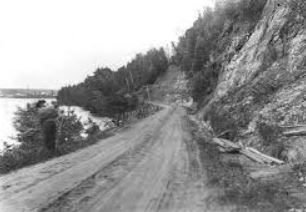

|
 |
Route SelectedIdaho Statesman July 21, 1911 |
|
Petitions for different routes were submitted, and other routes were considered for which no petitions were submitted. The route decided upon, starting at Boise, runs to Spring Valley, thence to Horseshoe Bend, crossing the Payette river at that point, and continues up the west side of the river to Smith's Ferry; there it crosses the river again and continues up through Round valley and Long valley, through Thunder, Crawford, VanWyck, Roseberry, and ends at McCall, at the foot of Payette lake. |